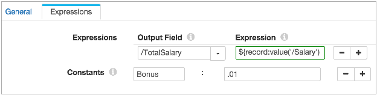

| Processors | |
Use the expression language to configure expressions and conditions. You can configure expressions in the Expression Evaluator. You can configure conditions in the Stream Selector.
For details about literals, operators, functions, and reserved words, see Expression Language.
Precede all expressions with a dollar sign and enclose them with curly brackets, as follows: ${<expression>}.
For example, to add 2 +2, use the following syntax: ${2+2}.
When you use a field name in an expression, use the following syntax:
record:value("/<field name>")
For example, the following expression concatenates the values from the DATE field with values from the TIME field:
${record:value("/DATE")} ${record:value("/TIME")}
record:value("/<path to field>/<field name>")
You can define constants that you can reuse within a processor. Define a constant when you have a value that you want use more than once in the processor or that you want to be able to update easily. You can define constants in the Expression Evaluator and Stream Selector processors.
${(record:value("/SALARY")) + (record:value("/SALARY")*.01)}
However, the bonus percentage changes regularly. So instead of using .01 directly in the expression, you can create a Bonus constant and set it to .01 as shown:

Then, you can use the Bonus constant in an expression as follows:
${record:value("/SALARY")+(record:value("/SALARY")*BONUS)}